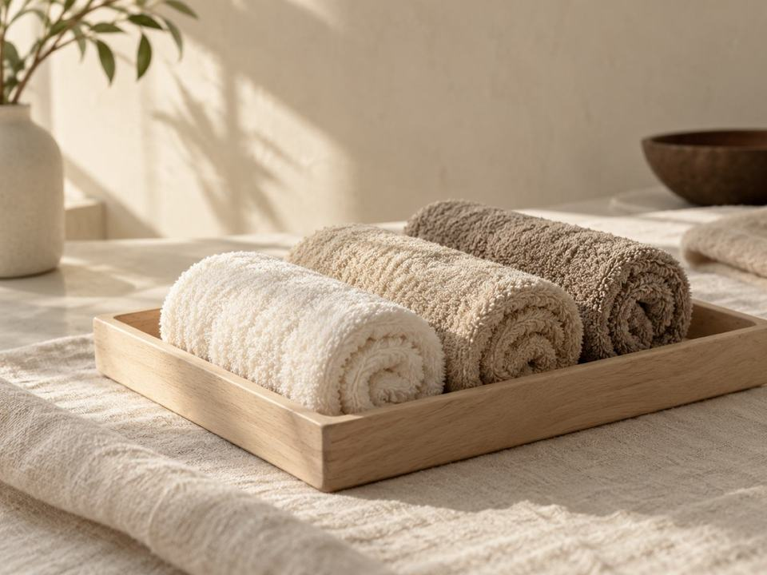
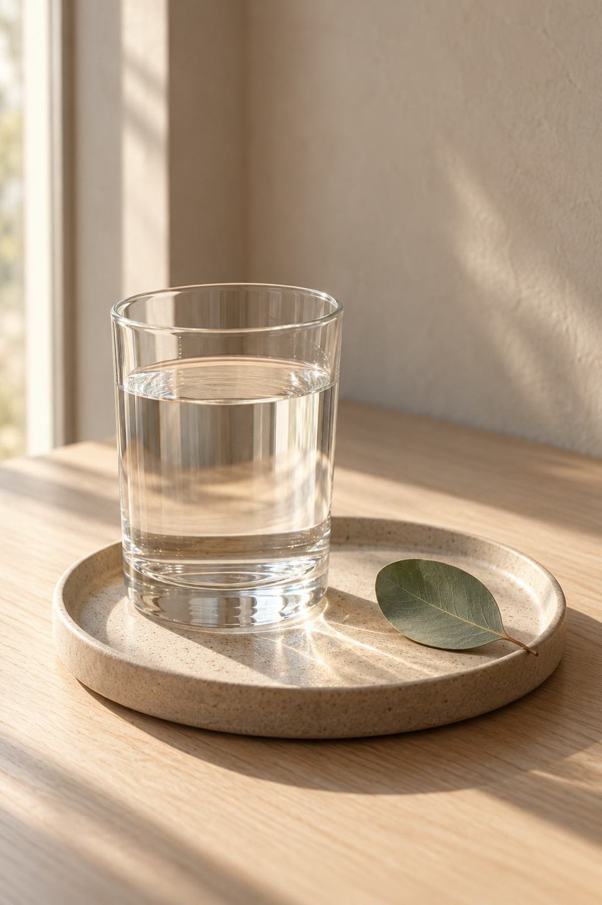
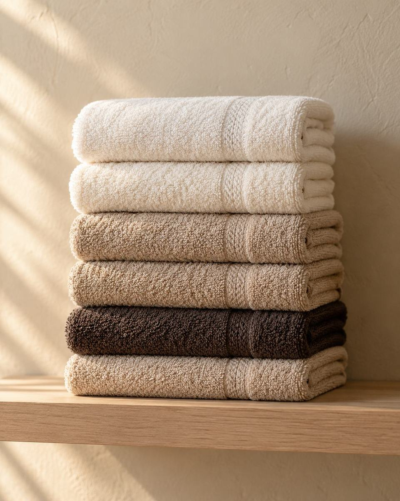
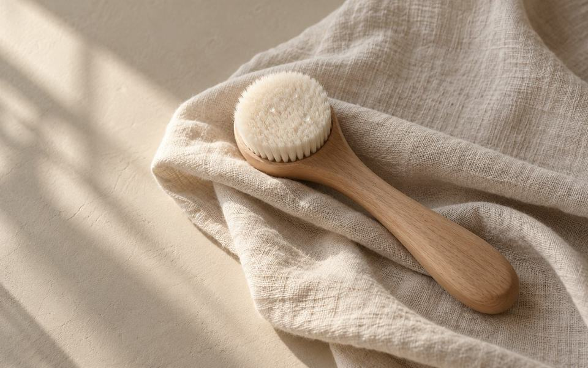
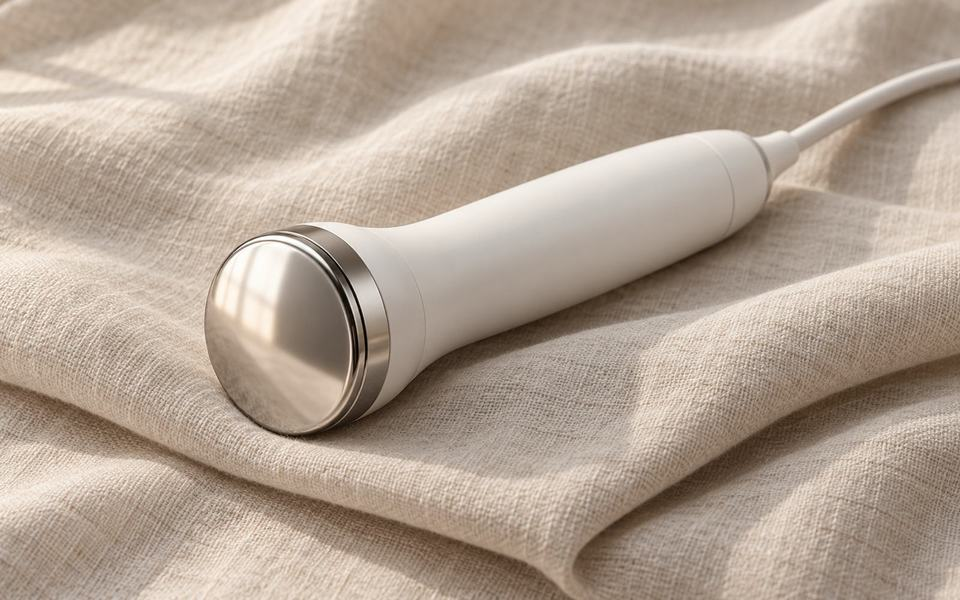
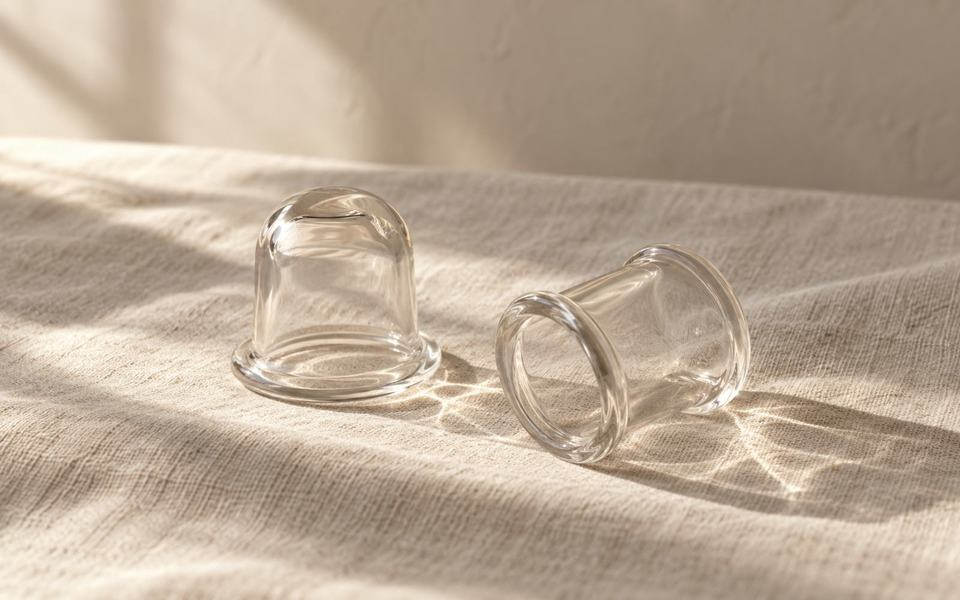

Procedimento
Drenagem linfática
em Pinheiros, São Paulo
A drenagem linfática em Pinheiros com a Mariana Muniz é feita na maca, com movimentos lentos, ritmados e de pressão leve.

Para quem é
Para quem é
- Você sente o corpo pesado no fim do dia.
- Quer incluir o corpo nos seus cuidados.
- Quer uma sessão de relaxamento no meio da semana.
A sessão
Como é a sessão
Em geral, a drenagem segue estas etapas. As regiões do corpo são combinadas na avaliação.
- 01
Na maca
Você deita coberta por um lençol, só com a região da sessão à mostra.
- 02
O ritmo
As mãos deslizam devagar, sempre na mesma direção, seguindo o caminho da linfa.
- 03
Região por região
Uma parte do corpo de cada vez, sem pular etapas.
- 04
O fim
Se quiser, fique uns minutos deitada antes de levantar.

Protocolo
O protocolo e o depois
- 01
Quantas sessões
A drenagem costuma ser feita em sequência. A avaliação define quantas e o intervalo.
- 02
Antes
Prefira uma refeição leve antes da sessão.
- 03
Depois
Em geral, a orientação é beber água ao longo do dia.
- 04
Quando adiar
Gestação ou alguma condição em acompanhamento médico: conte antes, e a avaliação define.
Mariana Muniz
Esteticista
Quem atende
Por que aqui
Ela fala da drenagem como um momento de relaxamento e autocuidado.
- Sala com maca e letreiro na R. Fradique Coutinho, 776
- Espelho ondulado e banquetas de pé dourado

Dúvidas
Dúvidas sobre drenagem linfática
A drenagem dói?
Em geral, não: a pressão é leve. Se algo incomodar, é só falar na hora.
Que roupa levar?
Uma roupa confortável para ir e voltar.
Quanto tempo dura?
Depende das regiões do corpo. A duração é combinada pelo WhatsApp quando você agenda.
Quanto custa?
O valor depende do protocolo; a avaliação é o momento de explicar o que faz sentido para a sua pele e o investimento.
Veja também
Outros procedimentos

Limpeza de pele
Para quem quer começar pelo rosto e sentir a pele limpa.
Ver procedimento
Radiofrequência e firmeza
Para quem quer um calor leve no rosto, com foco no contorno facial.
Ver procedimento
Massagem e relaxamento
Massagem facial com ventosas, para quem quer uma pausa no rosto.
Ver procedimento
Na drenagem, quem dita o passo são as mãos.
Agendamento
Agendar a drenagem.
Conte quais regiões do corpo você quer incluir.
Seg. a sex., 9h às 20hSáb., 9h às 17h